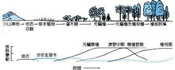

在生物學上，族群（英語：Population）指於一定空間範圍內同時生活的同種生物的全部個體；或者說是由個體組成，而且能夠確實進行交配的群體。族群的個體之間一般享有同一個基因庫。
它是族群遺傳學研究的對象，亦是物種演化的基本單位。
食物網(愈複雜)生物種類愈多穩定性愈高(自我調節能力愈強)
由小而大之排序: 個體→族群→群集 →生態系→生物圈
族群→同一時期同一棲地 同種 生物
群集→同一時期同一棲地 所有 生物(不同族群)
群落（英語：community）或稱為「群集」是指生存在一起並與一定的生存條件相適應的生物的總體。群落生境是群落生物生活的空間，一個生態系則是群落和群落生境的系統性相互作用。從定義可知，它是由在一個群落生境裡生活的動物群落和植物群落，也稱為生物系統組成的。生物地理群落是生物和地理因素，就是說無生命的環境的總和。
一個物種，特別是當它遷徙的時候，它會成為不同生物群落的成員。例如，在海洋的幼河鰻魚以葉狀幼體的形式屬於浮游生物，後來成為草鰻時它則成為海洋自游生物，到最後它成為河流里或湖裡的自游生物。而不同的生長階段也會使一個物種軌歸到不同的群落中去。例如大多數的蟹的幼體是無節幼體，算作浮游生物。但成體卻會生活在水中或岸邊，這時它們就屬於底棲生物。而很多貝類動物和多毛綱動物也是如此。
在生物群落中，各個族群占據了不同的空間，使群落具有一定的結構。群落的結構包括垂直結構和水平結構
垂直結構是指在群落生境的垂直方向上，群落具有的明顯分層現象。 以森林的群落結構為例。在植物的分層上，由上至下依次是喬木層、灌木層和草本植物層。動物的分層亦呈這種垂直結構：鷹、貓頭鷹、松鼠居於森林上層，大山雀、柳鶯等小型鳥類在灌木層活動，鹿、獐、野豬等獸類居於地面，蚯蚓、馬陸等低等動物則在枯葉層和土壤中生存。
水平結構是指在群落生境的水平方向上，群落具有的明顯分層現象。由於在水平方向上存在的地形的起伏、光照和濕度等諸多環境因素的影響，導致各個地段生物族群的分布和密度的不相同。 同樣以森林為例。在喬木的基部和被其他樹冠遮蓋的位置，光線往往較暗，這適於苔蘚植物等喜陰植物的生存；在樹冠下的間隙等光照較為充足的地段，則有較多的灌木與草叢。
1.一個群落生境的小生境越是多樣，那麼其中的物種就越豐富。（熱帶雨林）
2.一個群落生境的非生物因素和全球平均值相差越大，其物種也會越少，但個體數目卻會越多。這個區域的群落通常是高特異性的。（鹽湖，深海）
3.一個群落生境的生存環境越是緩慢連續地交替改變，群落也越豐富。（珊瑚礁）
一個群落被另一個群落取代的過程稱為群落的消長。
